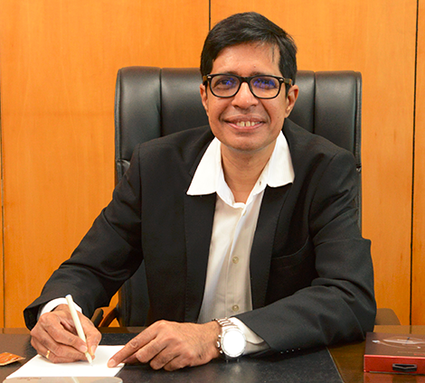

Demis Hassabis
CEO,Google Deepmind
Innovations in General Intelligence and Scientific Discovery
DAY -1
TIME : 8.00 - 10.00
DAY -1
TIME : 8.00 - 10.00

Sridhar Vembu
CEO, Zoho Corp
Driving Innovation Through Responsible AI at Scale
DAY -1
TIME : 10.00 - 11.00
DAY -1
TIME : 10.00 - 11.00
Abinav Gupta
CMU/Meta
The Future of Jobs: AI, Automation, and What It Means for You
DAY -1
TIME : 11.15 - 12.30
DAY -1
TIME : 11.15 - 12.30

Suresh Sambandam
CEO, Kissflow
Decentralized AI Innovation: Building Global Tech from Rural India
DAY -1
TIME : 01.00 - 03.00
DAY -1
TIME : 01.00 - 03.00

Rohini Srivastha
Microsoft India
How to Start a Career in AI: Skills, Tools, and Roadmap
DAY -2
TIME : 8.00-10.00
DAY -2
TIME : 8.00-10.00

Balaram Ravindar
Professor, IIT MADRAS
The Next Wave of Innovation: Self-Supervised AI for Embodied Intelligence
DAY -2
TIME : 10.00 - 11.00
DAY -2
TIME : 10.00 - 11.00

Dr. V Kamakoti
Director, IIT Madras
The Rise of Generative AI: ChatGPT, DALL·E, and the New Creative Revolution
DAY -2
TIME : 11.15 - 12.30
DAY -2
TIME : 11.15 - 12.30

Manish Gupta
Google Research India
Reimagining Workflow Innovation: No-Code AI for the Next Billion Users
DAY -2
TIME : 01.00 - 03.00
DAY -2
TIME : 01.00 - 03.00